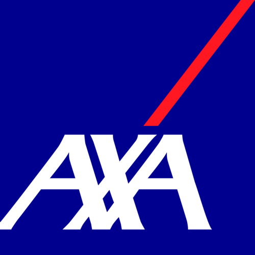

Technical Projects
I enjoy coding, open-source work, and hardware tinkering, contributing to the chainladder-python library, customizing devices like routers and Raspberry Pis, and staying current with new technologies.
Technical projects
I am currently the Head of Pricing, Large Commercial at AXA XL, the property and casualty and specialty risk division of AXA.
Large commercial accounts need pricing that is technically rigorous but still practical for underwriters. I lead pricing and portfolio management strategy for the America's Large Commerical vertical. I build pricing frameworks that are robust, easy to maintain, fast to refresh, while keeping aligned with our business objectives. I also help underwriters make sound business decisions using modern actuarial science that is not a black box.
Learn moreI'm a modern actuary with strong technical skills. I combine deep domain knowledge with modern tools and techniques to deliver value for the whole enterprise.
My primary areas of expertise include:
I use modern actuarial techniques to manage unique and emerging risks and translate complex problems into understabdable insights. My work includes developing predictive models, setting capital efficiency strategies, maintaining robust reserves, and creating diagnostic tools that help leadership identify evolving trends early and make confident, data driven decisions.
I support the formation, optimization, and governance of insurance captive structures that align the risk financing goals with broader business objectives. From financial oversight to performance monitoring, I help organizations maximize captive value with minimal capital tied up through disciplined management and informed decision making.
I build comprehensive risk frameworks that help organizations identify, assess, and manage interconnected strategic, operational, and financial risks. By combining scenario analysis and stress testing, capital planning, careful governance design, and regulatory insight, I drive responsible decision making and position businesses to respond proactively in an increasingly complex risk environment.
Although my full time role keeps me more than busy, I'm always open to connecting with professionals who'd like to bounce ideas around on new actuarial problems, data modeling, or complex risk challenges. These conversations keep me sharp and plugged into emerging industry issues.
With a strong foundation in pricing, reserving, and reinsurance, I’ve held key actuarial roles across growth-stage startups and established companies. In my most recent role as Head of Actuarial at Breach Insurance, I led initiatives in product development, pricing strategy, and profitability studies. Before that, at Cover, I managed profitability for the non-standard personal auto market. At Uber, I focused on pricing and reserving for their rideshare and delivery businesses, managed their captive, and contributed to SOX compliance in preparation for Uber's IPO. My actuarial career began at Allstate, where I worked on rate indications and regulatory filings, and supported new product launches.
I'm passionate about the actuarial community and I actively seek opportunities to support its growth through collaboration and knowledge sharing. Contributing in this way is one small way I aim to give back.
Here is a sample of my public-facing work, showcasing projects that blend my professional interests with personal curiosity.
I enjoy coding, open-source work, and hardware tinkering, contributing to the chainladder-python library, customizing devices like routers and Raspberry Pis, and staying current with new technologies.
Technical projectsI present on digital asset risks, actuarial professionalism, and open-source tools. I also support the CAS on various presentations, spreading knowledge to actuaries of all expertise levels.
Keynotes & presentationsI write for the Actuarial Review, focusing on professionalism, standards, disciplinary processes, and trends in conduct. Are you looking for some easy Continuing Education credits?
PublicationsI volunteer with the CAS on committees and initiatives that advance the profession. Currently, I chair the Annual Meeting Working Group and support many other committees on education efforts.
Volunteering workIf anything sparks your interest or you have an idea you'd like to explore together, I'd be really happy to hear from you. Please don't hesitate to reach out!